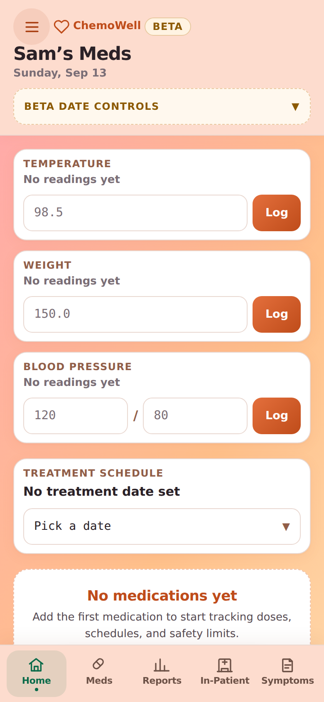
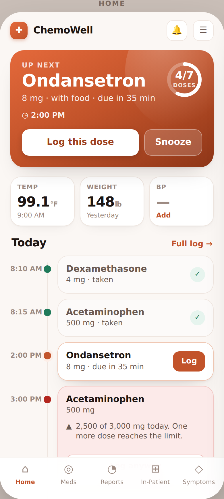
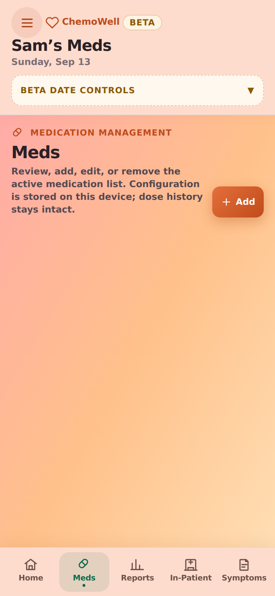
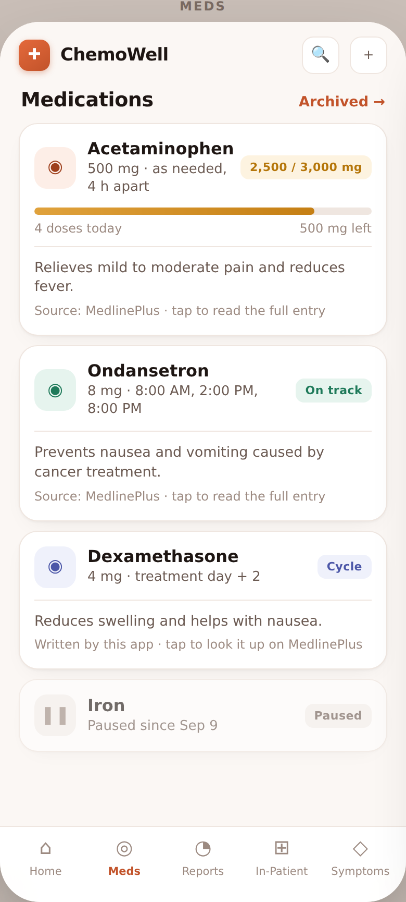
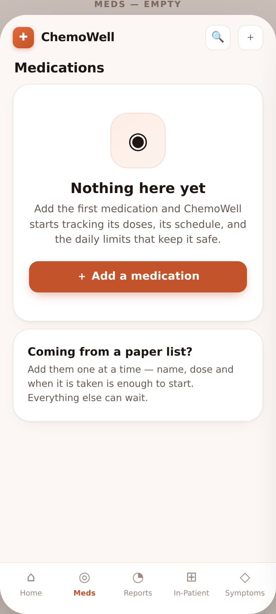
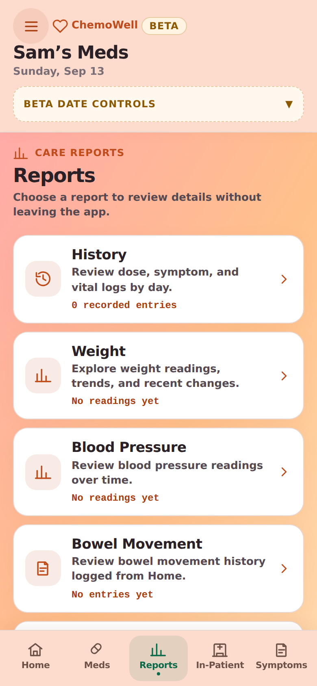
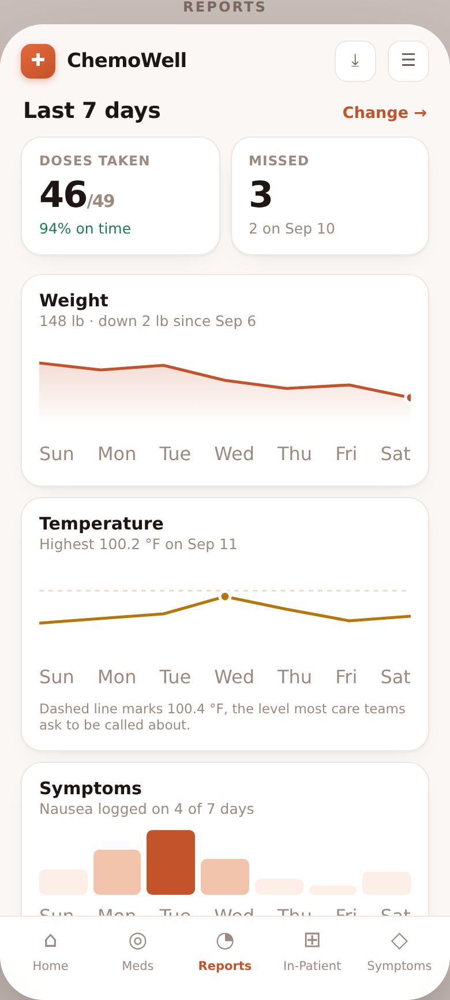

Left is the app as it ships today. Right is the proposed direction. The reference point is the category leader: Medisafe's home screen is a timeline of what is due when, and ChemoWell's is a stack of data-entry forms. That is the structural gap; the colour and the type are downstream of it.






